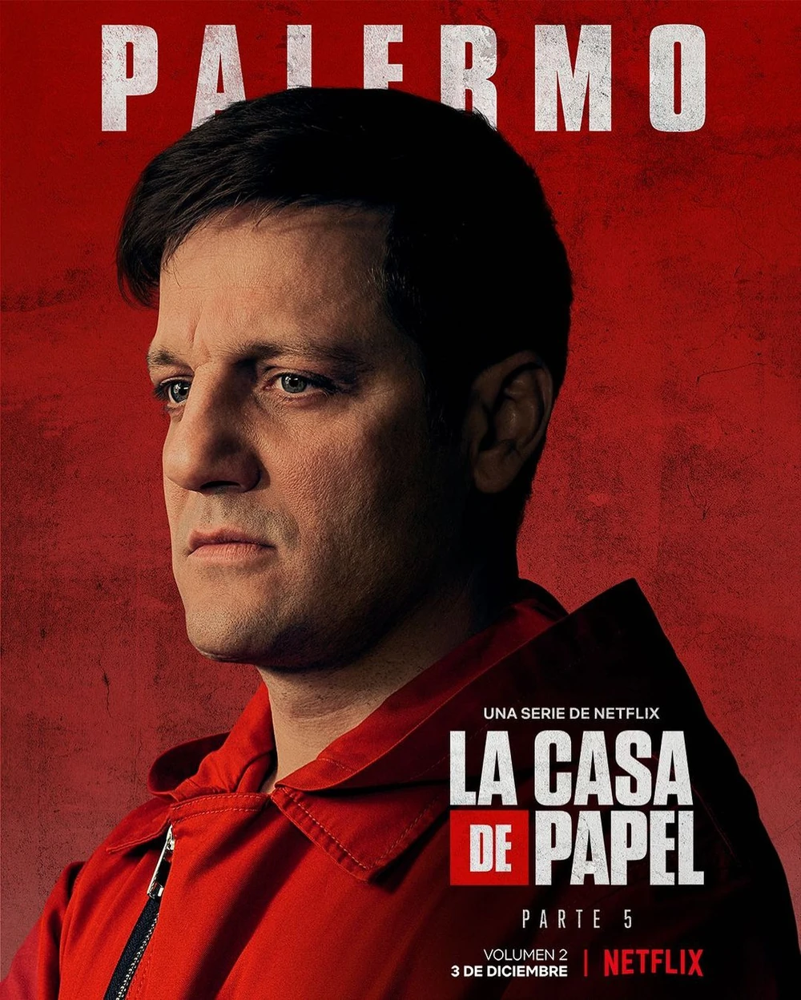

Palermo - The Engineer with a Dark Past
Palermo, portrayed by Rodrigo de la Serna, is a complex character in "Money Heist."
Initially introduced as the engineer for the Royal Mint heist, Palermo's intelligence
and technical skills play a crucial role in the success of the plan. However, his
enigmatic past and personal struggles add layers to his character. Palermo's dynamic
with the Professor and the rest of the gang brings both tension and emotional depth
to the narrative. As the series unfolds, Palermo's journey explores themes of
redemption, loss, and the consequences of one's actions. His character contributes
to the intricate web of relationships that define the intense world of "Money Heist."